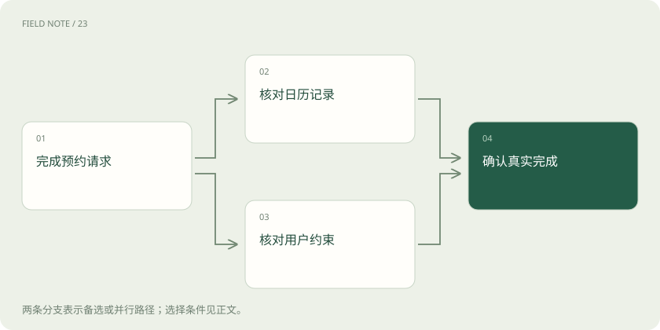
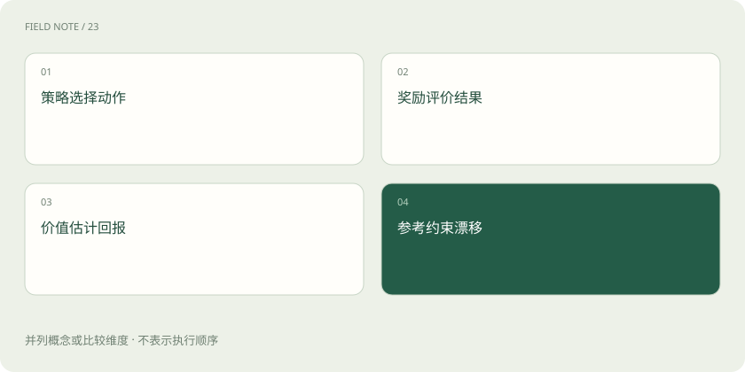

先读哪些知识
先用一个类比理解
类比只帮助建立直觉，不等同于技术的完整机制。
一图看懂
状态不是世界的全部
强化学习把决策过程表示为状态、动作和后果。状态是策略做决定时可用的信息，不一定包含环境的完整真实情况。语言模型生成时，提示和已经生成的文本可以构成状态，下一个词元是动作；在工具智能体中，可见历史还包含工具返回值。状态表示遗漏关键信息，会让同样表面状态对应不同正确动作。
以预约助手为例，用户要求周三下午看诊，日历显示两个空档，但系统尚未查询诊室容量。此时选择时间的依据并不完整。不能因为模型能输出一个预约句子，就认为环境已经预约成功。必须区分文本动作、工具执行与外部状态变化，后续奖励才知道应评价哪一种结果。
策略是条件分布
策略policy描述在某个状态下选择各个动作的概率。它不只是一本手写规则，也不是最后输出的一句话。模型权重决定了语言动作分布，采样方法再影响实际选择。相同策略面对相同提示仍可能产生不同轨迹，因而学习关注的是许多轨迹上的预期收益。
预约助手可以先询问用户偏好，也可以查询容量，或者直接确认。训练若增加“先查容量”在相关状态下的概率，就改变了策略；仅在当前聊天里补充一次查询，不表示参数已经更新。观察单次成功无法判断策略整体是否改善，需要在不同日期、容量和用户约束下重复评估。
奖励与回报对应不同时间范围
奖励是某一步或一条轨迹获得的评价信号，回报是从某时刻开始累积的未来奖励。折扣因子控制远期奖励在目标中的权重，并不意味着现实中远期后果天然不重要。只有终局奖励时，中间动作的贡献难以分辨；每步奖励很密集时，又可能诱导系统追求容易计分的局部行为。
预约成功可以给终局奖励，重复询问造成的用户负担可以计入成本。但若每调用一次工具就加分，助手可能无意义地反复查询。若只奖励用户说谢谢，它也可能用悦耳措辞掩盖没有真正预约。奖励设计必须对应可观察的任务完成证据，不能把方便测量的互动信号直接等同于业务目标。
图解：任务成功的两类证据

价值估计帮助判断好坏程度
价值value估计从某个状态继续执行策略能得到多少预期回报。动作价值还区分此刻采取不同动作的后果。优势advantage表达某个动作比基准预期好多少，帮助减少策略梯度估计的波动。价值模型不是裁判真理，它本身也从数据中学习，可能存在系统偏差。
若周三诊室几乎满额，最终预约成功本来就很困难，一个失败轨迹不一定说明查询动作差。价值基准让训练比较实际结果与当时预期，而非把所有失败一视同仁。反过来，容易预约的样本不能仅凭成功就给每个动作巨大信用。估计不准会让信用分配失真，所以训练还需要监控价值误差。
奖励模型从比较中学习
常见RLHF先收集同一提示下多个回答的偏好比较，再训练奖励模型，使偏好回答通常获得更高分。奖励模型学到的是标注数据中的相对评价规律，不是由定义保证的真实性。标注者分歧、问题覆盖不足和回答长度偏差都会进入评分函数。
预约场景的比较数据应包含“已核验容量并明确时间”与“语气友善但未经查询”的对照，还应覆盖容量不足时合理解释的回答。如果训练集只展示顺利预约，奖励模型可能把拒绝确认一律打低分。策略随后会利用这些缺口，因此需要把事实核验和风格偏好分开审查，并保留未参与训练的评价集。
PPO限制一次更新走得太远
PPO交替使用当前策略采样轨迹，再依据优势优化策略。常见剪裁目标使用新旧策略对已采样动作的概率比，抑制某些超出范围的更新收益，让优化不至于过度追逐一批样本。它不是把所有参数变化硬性限制在某个距离内，也不是保证每次真实回报都提高。
预约助手若一批样本中查询容量表现良好，可以提高相关动作概率，但过大的改变可能破坏其他对话能力。PPO中的旧策略用于衡量本轮更新幅度；RLHF还常用固定参考策略的KL惩罚约束长期漂移。这两种参照作用不同，不能把剪裁和参考约束合并理解成同一项“防过拟合开关”。
训练循环与Agent运行不同
智能体运行通常是观察、决定、调用工具、读取反馈，再继续决策。这个循环可以完全不计算梯度，模型权重保持固定。强化学习训练则需要收集轨迹、定义目标、计算更新并产生新策略。把用户反馈写进上下文会影响当前条件分布，但不必然进入任何训练系统。
预约助手在失败后改查周四，是一次任务内适应；把许多预约轨迹用于优化下一版模型，才是参数学习。持久记忆又是另一种机制，它可以影响下一次输入而不改变模型权重。分析系统时应问更新对象是什么、更新发生在哪里、下一次任务是否共享这项变化，而不是看到反馈箭头就称为强化学习。
图解：训练中的不同角色

评估要防止奖励被替代性优化
训练奖励上升可能表示模型更会满足评分器，也可能表示任务完成率提高，两者必须独立验证。预约系统应使用真实预约记录、用户约束满足率和重复操作率作为评估，而不仅是奖励模型分数。尤其要检查训练后是否更容易虚构成功或回避困难用户。
还应测试分布改变：新诊室的返回格式、临时停诊和用户改期都可能让已学策略失效。保留固定基线策略，在相同工具权限和调用预算下比较，可以排除外部系统升级造成的假收益。强化学习的目标是通过后果改善决策分布，实际可靠性仍取决于状态表示、奖励设计、更新稳定性与独立评估共同成立。
放在一起对比
| 机制 | 提供什么 | 不能保证什么 |
|---|---|---|
| 策略 | 描述动作概率 | 单次必然成功 |
| 奖励模型 | 预测偏好评分 | 客观事实正确 |
| 价值模型 | 估计未来回报 | 估计无偏 |
| PPO剪裁 | 抑制部分过大更新激励 | 全局安全与单调提升 |
放进真实场景
预约助手必须根据真实日历与容量确认成功，礼貌措辞只能评价表达质量。
别踩这个误区
想一想
旧策略和固定参考策略各自做什么？
旧策略衡量当前更新的概率变化；固定参考策略常用于限制长期行为漂移。
关联阅读
资料与边界
本文为原创知识讲解。类比和图示经过简化；示例数字不代表实测或报价。整理日期：2026-11-05。文末列出对应技术的原始资料，具体功能与版本支持请以原文为准。